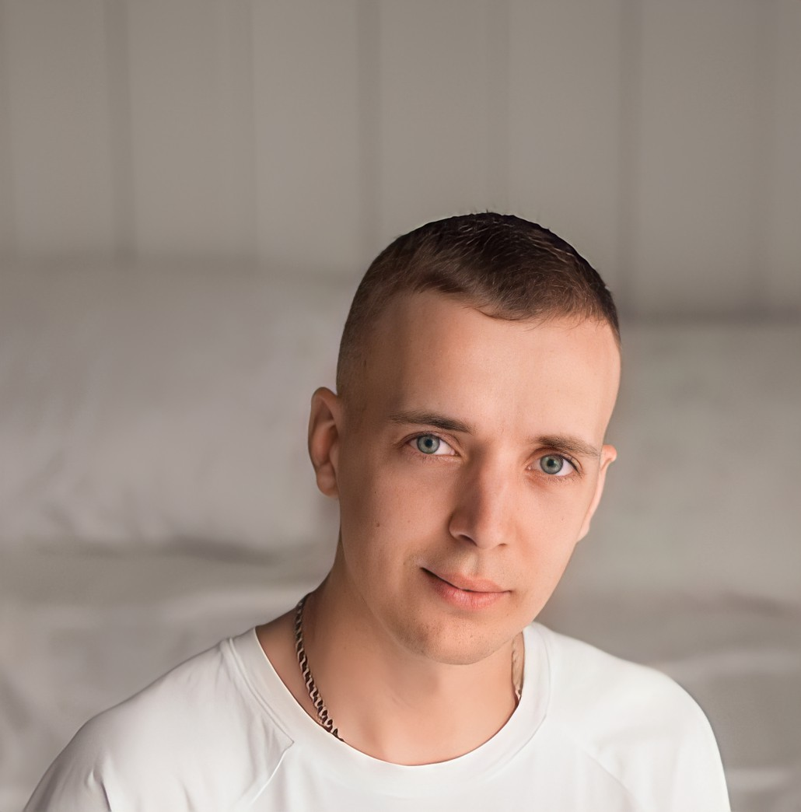

Лыщик Максим

Обо мне
Я родился и вырос в г.п.Вороново. Закончил Гродненский университет по специальности
инженер-строитель-технолог. По распределению попал в проектное бюро, где и
потратил провёл 5 лет жизни. Последние полтора года стали особенными:
- Я встретил любимого человека
- Мы создали семью
- У нас родился ребёнок
Теперь, когда многое и самое дорогое есть в жизни, можно искать свой путь и наслаждаться этим.
Образование
- 2016–2018гг — магистратура ГрГУ «им.Я.Купалы»
- 2010–2015гг — бакалавриат ГрГУ «им.Я.Купалы»
Опыт работы
5 лет от инженера-проектировщика без категории до ведущего инженера-проектировщика
Хобби
- Спорт
заброшено - Игра на гитаре
заброшено - Лить бетон — новое занятие
Путь к «Frontend–разработчику»
- 20 сентября 2018г — всвязи с "застоем" на работе, написал знакомому из IT каким образом можно найти себя в этой сфере
- 14 октября 2018г — знакомый ответил, что самый минимальный порог вхождения – это вэб–программирование
- с 14 октября 2018г по ноябрь 2020г — всё успешно забыто
- ноябрь 2020г — в ходе долгих размышлений было принято решение пройти курсы по обучению рабчей специальности в IT
- 24–27 ноября 2020г — изучение специальностей и школ по обучению
- 30 ноября 2020г — начало обучения в школе Skillfactory по направлению Frontend–разработчик
Контакты
Республика Беларусь, г.Гродно,
ул.Терешковой, д.50